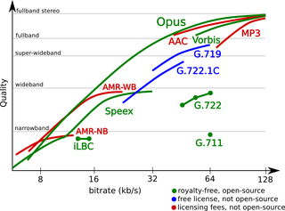

Opus
Dieser Artikel wurde für die folgenden Ubuntu-Versionen getestet:
Ubuntu 16.04 Xenial Xerus
Ubuntu 14.04 Trusty Tahr
Zum Verständnis dieses Artikels sind folgende Seiten hilfreich:
Opus  ist ein junges Audio-Format, das eine Vielzahl nützlicher Eigenschaften in sich vereint. Ähnlich MP3 oder Vorbis verkleinert ein Opus-Codec Audiodaten mittels verlustbehafteter Reduktion anhand eines psychoakustischen Modells. Der Referenz-Codec ist anderen älteren Codecs meist deutlich überlegen. Insbesondere bei Bitraten oberhalb von etwa 15 Kilobits pro Sekunde (kbit/s oder kbps) werden bessere Ergebnisse erzielt. Weiterhin ist ein auf menschliche Sprache spezialisierter Modus integriert. Das Format ist seit Sommer 2012 ein von der Internet Engineering Task Force (IETF) abgesegneter, weltweiter Standard zur Audiokodierung im Internet.
ist ein junges Audio-Format, das eine Vielzahl nützlicher Eigenschaften in sich vereint. Ähnlich MP3 oder Vorbis verkleinert ein Opus-Codec Audiodaten mittels verlustbehafteter Reduktion anhand eines psychoakustischen Modells. Der Referenz-Codec ist anderen älteren Codecs meist deutlich überlegen. Insbesondere bei Bitraten oberhalb von etwa 15 Kilobits pro Sekunde (kbit/s oder kbps) werden bessere Ergebnisse erzielt. Weiterhin ist ein auf menschliche Sprache spezialisierter Modus integriert. Das Format ist seit Sommer 2012 ein von der Internet Engineering Task Force (IETF) abgesegneter, weltweiter Standard zur Audiokodierung im Internet.
Zur ersten groben Abschätzung der Klangqualität: Bei etwa 96 kbit/s durchschnittlicher Bitrate kann man mit den 1.0.x-Versionen des Referenzkodierers bis auf mehr oder weniger seltene Problemsituationen klanglich transparente Audiodateien erzeugen, für die beispielsweise mit dem älteren Format MP3 eine Bitrate von 160 kbit/s oder mehr notwendig ist. Praktisch heisst das, man erhält bei gleicher Qualität nur halb so große Dateien.
Funktionsübersicht¶
|  |
| Opus im Vergleich mit anderen Audio-Codecs (Bildquelle ) |
Während die technischen Details einem Wikipedia-Artikel und der Projektseite zu entnehmen sind, zeigt die folgende Liste die für den Benutzer sichtbaren Vor- und Nachteile:
Pro:
nur noch ein Codec für Musik und Sprache notwendig
hohe bis sehr hohe Klangqualität im Vergleich mit anderen Formaten/Codecs
streamingfähig
Einbetten von Metadaten
Unterstützung von Cuesheets und Replay Gain
Abspielen auch von beschädigten Dateien und Datenströmen durch Fehlerkorrektur
lizenzkostenfrei
Contra:
Konvertierung in andere verlustbehaftete Formate birgt Generationsverlust
bisher kaum Verbreitung (Stand: April 2013)
fast keine Unterstützung durch Hardware-Player (Ausnahme: die offene Firmware Rockbox)
Das Format und der Referenz-Codec beherrschen sowohl Datenströme mit unbeschränkt oder nach bestimmten Vorgaben beschränkt variabler Bitrate (VBR, Standard bei Opus) als auch mit fester, konstanter Bitrate (CBR).
Installation¶
Die Unterstützung für das noch junge Format kann aus den offiziellen Paketquellen installiert [1] werden:
libopus0 (Referenz-Codec)
opus-tools (siehe Kommandozeilenwerkzeuge)
 mit apturl
mit apturl
Paketliste zum Kopieren:
sudo apt-get install libopus0 opus-tools
sudo aptitude install libopus0 opus-tools
Nutzung¶
In der Praxis hängt die Nutzung von der Unterstützung durch Multimedia-Programme ab. Am einfachsten ist diese, wenn die Einbindung über Kommandozeilenwerkzeuge möglich ist. Die zweite Variante ist die Nutzung über das Multimedia-Framework GStreamer. Auch eine dritte Möglichkeit ist vorhanden: manche Programme wie Firefox enthalten eigene Routinen zum Abspielen und sind so unabhängig von den ersten beiden Varianten.
Wiedergabe¶
Mit dem VLC Media Player kann das Format ab Version 2.0.4 ohne weiteres abgespielt werden
Beim ersten Abspielversuch werden weitere Pakete benötigt, deren automatische Installation gleich angeboten wird:
Firefox kann ab Version 15 in Webseiten eingebettete Opus-Dateien und -Streams wiedergeben (Beispiel
)
Erzeugung¶
Soundconverter zum bequemen Umwandeln: Ab Version 2.0.4 bzw. Ubuntu 13.04 kennt das Programm nach der Installation von gstreamer0.10-plugins-bad in Version 0.10.23 oder neuer Opus.
Rubyripper zum direkten Rippen von Audio-CDs. Fremdpakete
gibt es ebenfalls bei GetDeb. Mit Rubyripper kann man beliebige Kommandozeilen-Kodierer verwenden. Für eine englischsprachige Schritt-für-Schritt-Anleitung zur Nutzung mit Opus siehe Rubyripper and OggOpus .Audacity kann Opus-Dateien mit externen Kodieren erzeugen; dazu zum Abspeichern eine der diversen Exportier-Optionen im "Datei"-Reiter verwenden. Dort als Format "(externes Programm)" wählen, als "Befehl" verwendet werden können
opusenc --bitrate 128 - "%f".opus
- es können auch weitere opusenc-Optionen aufgeführt werden (siehe unten, oder auch in der manpage zu opusenc)
ffmpeg -i - -c:a libopus -b:a 128k "%f".opus
- liefert ähnliche Ergebnisse, hier wird der Umweg über FFmpeg genommen, das funktioniert allerdings nur mit FFmpeg-Versionen, die mit der Option
--enable-libopuskonfiguriert wurden.Der einzelne Bindestrich '-' ist wichtig, er steht für die Eingabedatei, die Audacity liefert,
"%f"ist der Platzhalter für die Ausgabe-Datei mit Pfad,, die in Audacity unter "Ordner" angegeben wird.
Metadaten¶
Verschiedene Spezialprogramme erlauben massenhaftes Bearbeiten von Metadaten in Opus-Dateien. Teils sind entsprechende Programmversionen noch zu neu, um bereits ihren Weg in die offiziellen Ubuntu-Paketquellen gefunden zu haben und finden sich dann zum Beispiel auf Launchpad. Darunter sind Puddletag (ab Version 1.0.2 vom 7. November 2013), EasyTAG (ab Version 2.1), Ex Falso und Kid3 (ab Version 3 vom 23. Oktober 2013) bzw. entsprechende Backend-Bibliotheken wie mutagen (ab Version 0.21).
opusenc übernimmt beim Transkodieren Metadaten aus FLAC-Dateien.
Kommandozeilenwerkzeuge¶
Die opus-tools sind ein Paket mit nützlichen Kommandozeilenwerkzeugen [3] zum Umgang mit Opus-Dateien und -Datenströmen. Nach der Installation stehen die Einzelanwendungen opusenc, opusdec und opusinfo zur Verfügung. Nun können Audiodaten nach Herzenslust hin- und herkonvertiert, in sogenannten Pipes mit mehreren hintereinandergeschalteten Programmen oder auch geskriptet verarbeitet werden.
opusenc¶
Folgender Befehl wandelt PCM-Daten in Opus um:
opusenc [OPTIONEN] EINGABE AUSGABE
Es können ausschließlich WAVE, AIFF, FLAC und PCM-Rohdaten verarbeitet werden. Für Ein- und Ausgabe können Dateien oder Standard-Datenströme (gekennzeichnet durch ein -) genutzt werden. Die wichtigste Option ist wahrscheinlich die Angabe einer Bitrate. Beispiele:
Die einfachste Variante (mit einer Bitrate von 96 kbps):
opusenc DATEI.wav DATEI.opus
Festlegen der Bitrate auf 128 kbps:
opusenc --bitrate 128 DATEI.flac DATEI.opus
Eine konstante (CBR) statt einer variablen Bitrate (VBR) verwenden:
opusenc --hard-cbr --bitrate 160 DATEI.wav DATEI.opus
Alle Dateien in einem Ordner von Titel-nn.flac nach Titel-nn.opus mit VBR und 160 kbps umwandeln:
for j in *.flac; do opusenc --bitrate 160 "$j" "${j%.*}-(VBR-160).opus"; doneEine WavPack-Datei umwandeln:
wvunpack DATEI.wv -o - | opusenc - DATEI.opus
Neben diesen Parametern zur Konvertierung können auch Metadaten in Opus-Dateien geschrieben werden. Grundlage bilden die Metadaten-Spezifikationen von Ogg/Vorbis. Beispiele:
| Metadaten hinzufügen | |
| Option | Zweck |
--artist NAME | Künstlername oder Gruppe |
--title TITEL | Songtitel |
--album NAME | Albumname |
--genre GENRE | Musikrichtung |
Weitere Informationen sind – wie auch bei den nachfolgenden Programmen – der jeweiligen Manpage zu entnehmen.
opusdec¶
Das Gegenstück opusdec wandelt Opus in PCM-Daten. Bedienung und Ein-/Ausgabe-Möglichkeiten sind im Grunde analog, wobei die Ausgabe in der Standardeinstellung an die Soundkarte geleitet wird. Daher spielt der folgende Befehl die jeweils angegebene Datei ab:
opusdec DATEI.opus
Eine Konvertierung erfolgt durch Angabe eines Dateinamens:
opusdec DATEI.opus DATEI.wav
opusinfo¶
opusinfo gibt zu einer oder auch mehreren Opus-Dateien technische und statistische Informationen aus und prüft auf fehlerhafte Datenströme. Beispiel:
opusinfo DATEI.opus
Ausgabe:
Processing file "DATEI.opus"...
New logical stream (#1, serial: 2e2d7d65): type opus
Encoded with libopus 1.0.1
User comments section follows...
ENCODER=opusenc from opus-tools 0.1.5
Opus stream 1:
Pre-skip: 356
Playback gain: 0 dB
Channels: 2
Original sample rate: 44100Hz
Packet duration: 20.0ms (max), 20.0ms (avg), 20.0ms (min)
Page duration: 1000.0ms (max), 999.9ms (avg), 980.0ms (min)
Total data length: 4515795 bytes (overhead: 0.679%)
Playback length: 6m:27.970s
Average bitrate: 93.12 kb/s, w/o overhead: 92.48 kb/s
Logical stream 1 endedLinks¶
Hörbeispiele
 - in verschiedenen Bitraten
- in verschiedenen Bitraten
Opus - Wikipedia
Tonmeister - Audio-Codec Opus: einer für alle(s)
 - LinuxUser Community Edition, 05/2013
- LinuxUser Community Edition, 05/2013
- Erstellt mit Inyoka
-
 2004 – 2017 ubuntuusers.de • Einige Rechte vorbehalten
2004 – 2017 ubuntuusers.de • Einige Rechte vorbehalten
Lizenz • Kontakt • Datenschutz • Impressum • Serverstatus -
Serverhousing gespendet von